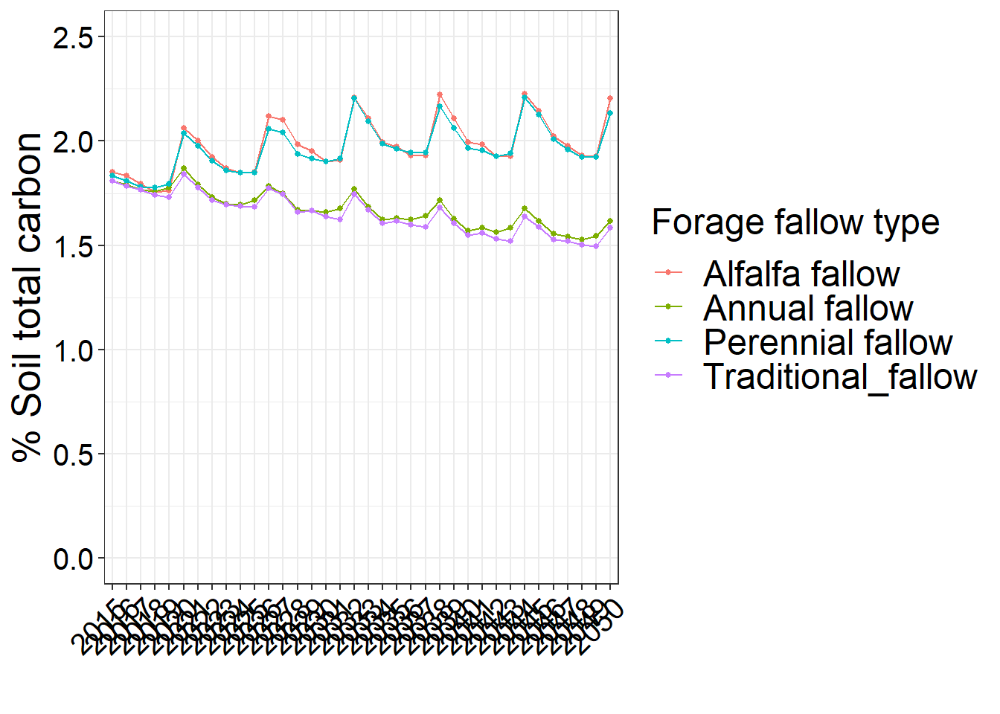
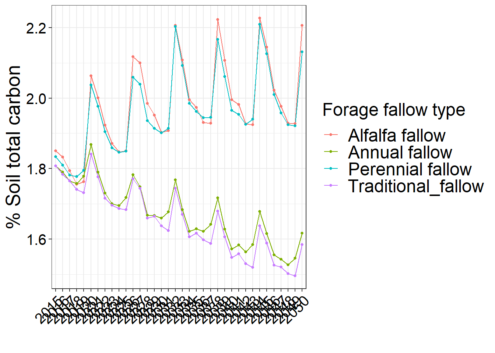

Step 3 Graph over 50 years
3.1 Graphing percentage of total soil carbon over 50 years
#Summarizing data set
summary_C<- Carbon_trends%>%
group_by(Treatment, year)%>%
summarise(
n=n(),
mean=mean(pctC),
sd=sd(pctC),
se=sd/sqrt(n))
summary_C## # A tibble: 144 × 6
## # Groups: Treatment [4]
## Treatment year n mean sd se
## <chr> <fct> <int> <dbl> <dbl> <dbl>
## 1 Alfalfa fallow 2015 60 1.85 0.498 0.0643
## 2 Alfalfa fallow 2016 60 1.83 0.459 0.0592
## 3 Alfalfa fallow 2017 60 1.79 0.462 0.0597
## 4 Alfalfa fallow 2018 60 1.76 0.445 0.0575
## 5 Alfalfa fallow 2019 60 1.76 0.438 0.0565
## 6 Alfalfa fallow 2020 60 2.06 0.382 0.0494
## 7 Alfalfa fallow 2021 60 2.00 0.385 0.0497
## 8 Alfalfa fallow 2022 60 1.92 0.366 0.0473
## 9 Alfalfa fallow 2023 60 1.87 0.368 0.0475
## 10 Alfalfa fallow 2024 60 1.85 0.359 0.0464
## # … with 134 more rows#Graph Carbon trends
data_new <- summary_C # Duplicate data
levels(data_new$Treatment) <- list("Alfalfa" = "Alfalfa fallow", # Change factor levels
"Annual" = "Annual fallow",
"Perennial" = "Perennial fallow",
"Traditional" = "Traditional_fallow")
C_con_EROD<-ggplot(data_new, aes(year, mean,group=Treatment, color=Treatment)) + xlab("") + ylab("% Soil total carbon")+
geom_line() +
geom_point(size=1)+
# scale_shape_discrete(name="Fallow type",
# breaks=c("Alfalfa fallow","Annual fallow", "Perennial fallow","Traditional_fallow"),
# labels=c("Alfalfa", "Annual", "Perennial","Traditional"))
guides(color = guide_legend(title = "Forage fallow type"))+
theme_bw()+
theme(axis.text=element_text(size=15, color="black"),axis.title=element_text(size=20), legend.title=element_text(size=18),legend.text=element_text(size=18), strip.text = element_text(size = 18), axis.text.x = element_text(angle = 45, hjust = 1))#+
#theme(panel.grid.major = element_blank(), panel.grid.minor = element_blank())
C_con_EROD+ scale_y_continuous(limits=c(0,2.5)) 
C_con_EROD